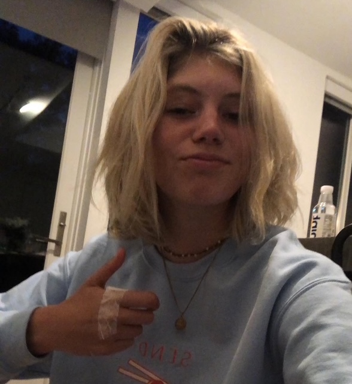
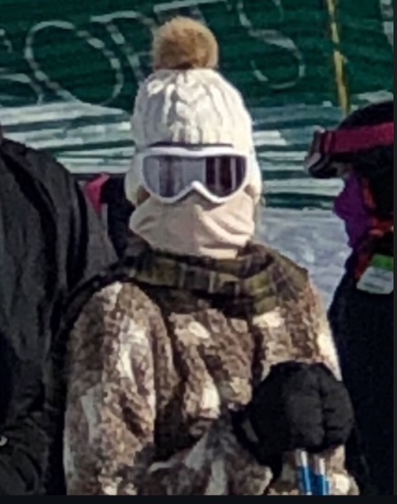
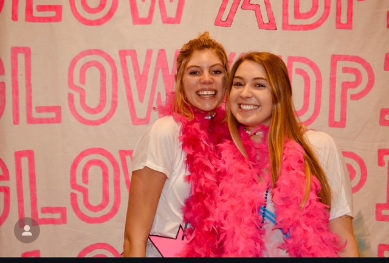

Boat days are better with Peyton at the helm. Catch her navigating tides and turning heads — all while repping the stars and stripes.
Low maintenance, high vibes. Bonus points for duct tape. She’s got grit, charm, and a top-tier meme game.
Peyton lights up every room — and sometimes the whole sorority wall. Certified GLOW Queen with unmatched party presence.
Slope style meets snow ninja. Peyton keeps it chill on the mountain but might ski straight into your heart.
Peyton enjoys long walks on the beach, abstract art she pretends to understand, and creative dates that don’t involve splitting a check. A Charlotte-based banker with a cat and a mortgage, she is the oldest of four siblings and carries that oldest-child emotional weight like a pro. She doesn’t *expect* flowers on a first date — but would absolutely judge you silently if you don’t bring them.
Now, before you slide into her DMs or drop a LinkedIn connection, here’s what we gathered from our *very official* interviews with family and friends:
Finally, for legal reasons, you must be okay with:
Only qualified suitors will be considered. But don’t worry — KPIs are flexible if your love language is charcuterie and commitment.
💘 Swipe to Court ← Back to Home